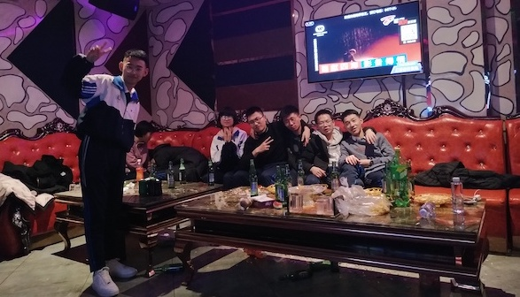

一拨人去商场采购零食、饮料，一拨人去快餐店打包烤鸭、炸鸡、汉堡，剩下一拨人留在学校装饰教室。
窃喜我是偷溜出校外采购零食的那一拨，各个品类的零食通通塞进购物推车，最后我们几个人慢慢拎着4大袋零食从商场出来。
大家开始一起包饺子，面是家长提前和好拿来的，饺子馅也是家委会提前备好的。
男生女生围了一圈开始包，有几个认真包饺子的女孩就有几个捣乱的男孩，最过分的是有人吹面粉呛大家满脸...
人多力量大，六点钟就全部完工准备把饺子拿去食堂下锅煮了。
重头戏是七点钟开始的元旦晚会,先是Mr.cai讲话开场，然后就是各式各样的表演，有民族舞、健美操、小品、单口相声、粤语歌曲演唱等等
大家边看表演边吃美食边聊天，是高三那年难得放松的一次晚会。
表演间隙还有组织好的小游戏，数七、传牙签、你画我猜、真心话大冒险...
最后当然是以大蛋糕结尾，不出意外 一半奶油全被我们用来给同学朋友抹脸，晚会结束，大家的脸上清一色白奶油
晚会结束收拾完教室后，Mr.cai带着我们几个出校吃吃喝喝，
在校门口，在校徽前，几个人倒计时54321 , 迎接2020年1月1日的到来
互道 "新年快乐" "2020高考加油"之后 ,合影
熬得住大夜的几个人一直唱k到天亮，后来再也没有那么高兴放纵过...
